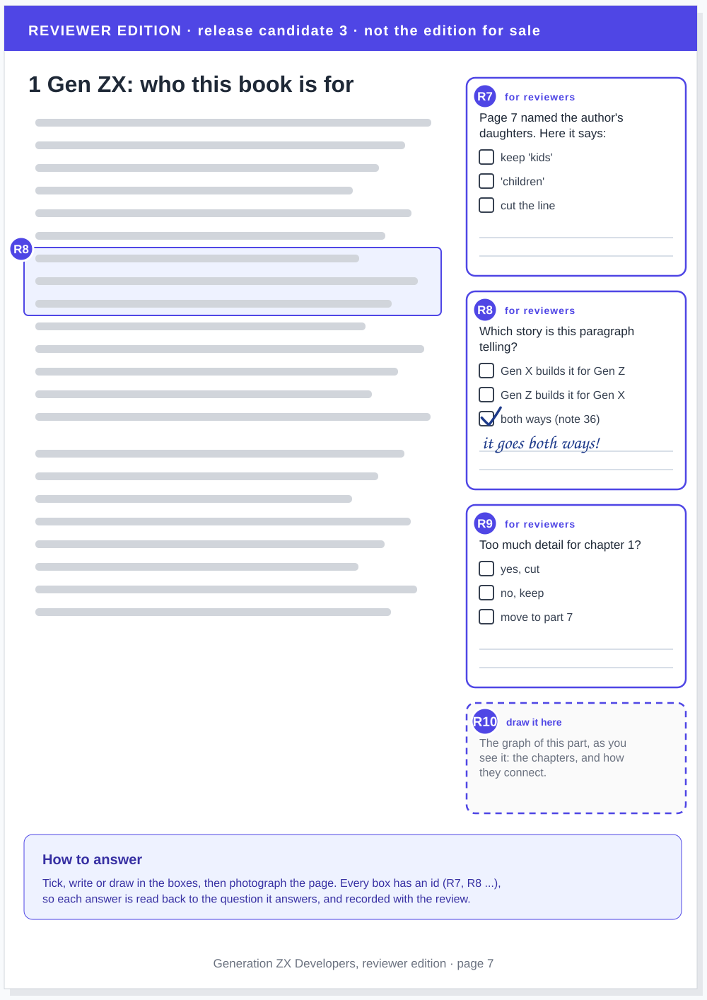

article · 2026-10-19 · site v0.2.37 · markdown
Two editions, the release and the review: every release candidate is a book you could sell, with nothing draft in it, and a reviewer's copy with the notes, the questions and a place to answer in pen
In short
- Two views of every release candidate. The release edition, for sale; and the reviewer edition, for reviewers.
- The release edition has nothing draft in it. It can need fixes and more content, but it is ready to put out there.
- Better to take it out than leave it weak. If the material is not good yet, it comes out, and goes back in later.
- The reviewer edition goes to town. Notes, questions, sections flagged as having issues, decisions to make.
- And it has a place to answer. Checkboxes, lines to write on, space to draw, each with an id.
- It is the workflow of my agentic email. A draft, an explanation, and a place for my answer.
- Leanpub as they come, Amazon when stable. The print edition is where the book stops changing.
Two views
I really like that box in the release candidate, the one that says For Dinis: what is missing, what needs deciding, in the page, where I meet it. I think it is something we should explore more. But it means we need two PDFs. There need to be two views.
One is the release candidate, which is a book for release, literally. That is the whole point: a release candidate should be ready to be released. It is something I can put out there. It might need some fixes, it might need some more content, but it should not have anything in it that reads like a draft. And it is better to take stuff out, if we do not have good materials, than to leave it in; we can add it back.
The other is for review. Not For Dinis: for reviewers, because it will not just be me. That version can go to town. It can have a page or two of notes and understanding before a chapter. It can have comments saying this section has issues, or what about this, or let us make a decision here. Everything the release edition leaves out, the reviewer edition keeps, and says why.
A place to answer
I have done this with email, and it works really well. When my agentic email workflow drafts a reply, the agent writes the draft with an explanation of the thing, and then gives me a checkbox, or a place to answer. Here it is the same, with paper in the middle: I read the reviewer edition with a pen, I photograph the pages, and the agent reads my handwriting. So make that easier. Give me a place to comment. Where there are options, give me checkboxes. Where you need me to draw something, give me the space to draw it.
Think of the reviewer edition as the way we communicate through the release. Every box has an id, so when the photograph comes back, each answer is read into the review record next to the question it answers, and nobody has to guess what my arrow pointed at.


Leanpub as they come, Amazon when stable
So the release candidates keep going until we are happy. We are going to start publishing them on Leanpub, maybe after a couple more rounds, but I am going to start pushing the release candidates there (decision 016). Once we reach a point of good stability, that goes on Amazon. The print version is the point where we are not going to make any more changes.
And yes, this is a new book now (decision 017). I will see if I can put one on top of the other on Leanpub, but this is fundamentally a new book.
The four readings
The journalist could not read four of my notes on pages 7 to 9 (RC2 on paper, part 2). Here they are:
- Note 31 says "now". The text says that a lot of Generation Z are not looking for a job, which is wrong: a lot of them are now looking for a job.
- Note 36 says "wrong story, since either could have built it". The chapter implies that Generation X spent their lives trying to build something and then Generation Z came along and built it. It goes both ways. Generation X can suddenly go: I can build this, look, finally I can do it, and impress Generation Z. Or go to them and say: you have this problem, look what I just built for you, a game, an app.
- Note 49 says "startups", not stand-ups. The book's website, where all the materials are public, will have my own startups as the first examples.
- Note 51 says we need two. Two PDFs, two views: this article.
The brief
For the publisher. Read team/publisher/role.md, decisions 016, 017 and 018, and this article first.
- Build two editions of each release candidate from the one source: the release edition, with no For Dinis notes, no placeholders and nothing that reads as a draft; and the reviewer edition, with the notes as review boxes. Done when both PDFs exist for the next candidate, and the release edition has none of the boxes.
- Push the release edition to Leanpub as each candidate comes, as a new book, with the listing from Version 2 on Leanpub. Done when the first candidate is on sale.
For the editor:
- Write the review boxes: every open question, flagged section and decision as a box with an id, its options as checkboxes, lines to write on, and a space to draw where a drawing is the answer. Done when the reviewer edition of the next candidate has them.
- Take out what is not ready: where a chapter's material is not good enough, it leaves the release edition, and its box says what would bring it back. Done when the release edition has no placeholder.
For the journalist:
- Read the answers back: each photographed page of the reviewer edition goes into the paper review record, answer by answer, under the box's id. Done when the first answered page is recorded.
What this does not claim
- The sketch is a sketch. The layout of the boxes is the editor's and the publisher's to design.
- "A couple more rounds" is my estimate, not a plan; the release candidates go on Leanpub when I say so.
- One reviewer edition for everyone, for now. If reviewers need different questions, that is a later decision.
Where this comes from
A voice memo of mine on 19 October 2026, answering the journalist's questions on the second batch of my paper review, written up by this site's journalist, gen-z.journalist, in my voice. The argument and the editorial responsibility are mine. The decision is 018.